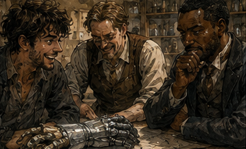
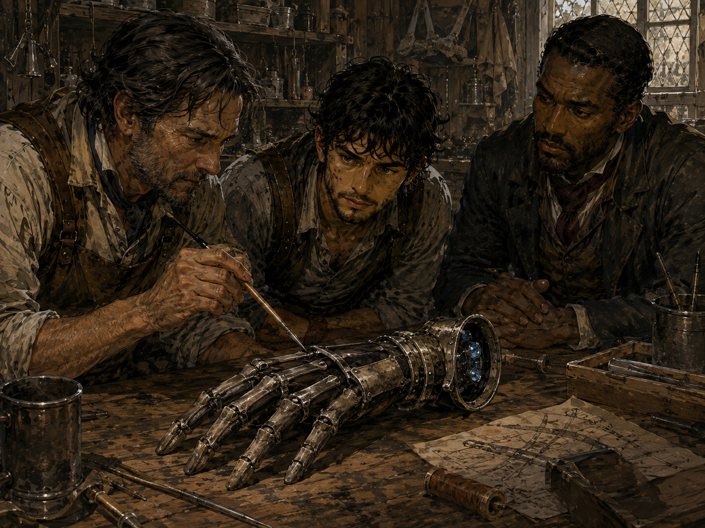
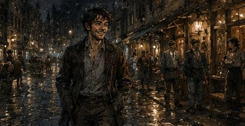

Antonius put a dead man's hand on the table. I looked at it. Then at him.
"That's new."
"It isn't his hand," Antonius said.
"That is exactly what someone says before explaining why a hand isn't technically a hand."
Across the table, Pell Arwick leaned forward until his nose was perhaps six inches from the object. "It's a gauntlet." The distinction was defensible. Barely. The thing had five articulated fingers, a palm, a wrist, and enough tarnished metal plating to suggest armor, but the proportions were wrong. Too narrow through the palm. Too long in the fingers. Black leather showed beneath strips of dull silver-gray metal, and a cluster of tiny blue stones had been set along the inside of the wrist. One finger was missing. That did not help. Antonius said, "It was offered against a loan."
"By the dead man?" I asked.
"He's alive."
"Then why did you let me think he was dead?"
"I put a gauntlet on a table."
"You put a severed-looking hand on a table before breakfast."
"It's nearly noon." I looked toward the window. It was, in fact, nearly noon.
"That's worse." Pell touched one of the wrist stones with the end of a wooden pick. "Don't."
"I wasn't going to touch it."
"You were leaning."
"I lean professionally." Pell gave me a flat look. "You bought a calibration gauge because you recognized a maker's stamp and still don't know what it does."
"I know what it does."
"You know what you think it does."
"That distinction is becoming fashionable."
Antonius sat behind his desk with his small leather ledger closed beside one elbow. He had summoned Pell to the warehouse and then sent Rusk to find me at Hessa's. I had assumed this meant the Tere gauge. It did not.
The gauge was still mine once I produced ten silver, which was simultaneously an absurd bargain and ten silver I did not currently possess. Antonius had reduced the price from the original forty-gold revelation to something that remained painful enough to teach me not to tell a lender how valuable his trash was. He claimed this was generosity. I claimed he was a bastard. We were both correct. Antonius tapped the metal hand. "What is it worth?" Pell did not answer.
I did.
"To whom?" Antonius looked at me. I smiled. He looked at Pell. Pell smiled. Antonius sighed. "I preferred both of you separately."

"That's because separately you can bully us," Pell said.
"I can bully you together."
"Not efficiently," I said. Antonius pointed at the gauntlet. "A man wants six gold. He says this is worth twelve. I don't know if it's worth twelve copper."
"Who is he?" I asked.
"No."
"Occupation?"
"Why?"
"Because if he's an adventurer, artificer, thief, grave robber, merchant, collector, soldier, or liar, the answer changes."
"Everyone is a liar."
"Useful. What kind?" Antonius considered me. "Salvager."
"Dungeon?"
"Mostly."
"Where?"
"No."
"Antonius."
"You don't need his route."
"I might."
"You don't."
Constraint. Fine. Pell rotated the gauntlet without touching the stones. "How old?"
"Seller says pre-Concord." Pell snorted.
"So no."
"Why?" I asked.
"Because sellers say pre-Concord when they mean old enough that nobody remembers the workshop."
"Could still be."
"Could be dragon-made."
"Dragons don't make gauntlets."
"Exactly."
I looked more closely. Pre-Concord meant before the standardization agreements that had turned half the continent's magical craft from local secrets into merely expensive local secrets. People romanticized the period because old artificing occasionally did something modern artificers found irritatingly difficult to reproduce. Mostly, however, old magical objects were just old.
Leather rotted. Runes wore. Mana channels cracked. People saw age and imagined lost mastery because nobody wrote ballads about obsolete hinges. The wrist stones bothered me. Not because I recognized them. Because I did not. Blue stones in magical equipment usually meant nothing by themselves. Color was one of the least useful ways to identify mana-active minerals and one of the most popular ways for idiots to do it. I crouched beside the table. Pell said, "Still don't touch."
"I know."
"You touched the Tere gauge."
"That was different."
"You didn't know what it was."
"I knew it wasn't going to bite me."
"How?" I thought.
"I felt confident." Pell stared. Antonius laughed.
"Excellent," Pell said. "Our appraisal method is confidence."
"I survived to, " I stopped.
Both men looked at me.
"To nineteen?" Antonius asked.
"Repeatedly." Pell frowned. I pointed at the gauntlet. "Can we make it do something?"
"Eventually."
"Why eventually?"
"Because I like having fingers."
"You have ten."
"Nine and a half."
I looked at his left hand. The tip of his smallest finger was indeed missing. I had never noticed. Pell caught me looking and tucked the hand under the table.
"Workshop accident," he said.
"I didn't ask."
"You were going to."
Everyone was becoming Antonius. Terrible. Pell opened his case. That was when I understood why Antonius had called both of us. Pell knew objects. I knew consequences. Or, more accurately, I sometimes remembered consequences and then lied to myself about knowing the objects that caused them. Different skill. Useful distinction. Pell laid out a thin copper rod, two pieces of chalk, a little glass cup, a coil of wire, and a flat stone marked with concentric circles. Antonius looked at the equipment.
"How much?"
"Mine," Pell said.
"That wasn't the question."
"More than your desk." Antonius put one hand protectively on the desk. I smiled. Pell noticed.
"Don't encourage him."
"I didn't say anything."
"Your face did."
Again. Pell began testing. Not dramatic testing. He did not chant. Nothing glowed. He touched the copper rod to different plates, marked responses in chalk, connected wire between two points, and muttered increasingly insulting things about whoever had built the gauntlet. I watched. Antonius watched me. After a while I looked at him.

"What?"
"Nothing."
"You're watching me instead of Pell."
"Yes."
"Why?"
"I know what Pell is doing."
"No, you don't."
"I know enough."
"What am I doing?"
"Waiting."
"Very observant."
"No. You're waiting to see what I say." Antonius smiled slightly.
That was new. A week ago I would have spent the whole appraisal trying to prove I knew more than Pell. Today I was interested in why Antonius had chosen six gold as the question. Not whether the gauntlet was valuable. Whether it was useful as security. Different. I looked back at the object.
"What does the borrower need six gold for?" Antonius said, "No."
"That's relevant."
"To whether this is worth six?"
"To whether you should care if it's worth six." Pell paused.
Antonius's eyes narrowed. I continued.
"If he needs six gold to buy a tavern, that's one problem. If he needs six gold to retrieve the other half of whatever this came from, that's another." Pell looked at Antonius. Antonius looked at me.
"Expedition."
There.
"What kind?"
"Recovery."
"His own claim?"
"Shared."
"How many people?"
"Four."
"How much has he already put in?"
"Greg."
"That's the business."
"The object."
"The object is collateral for the business." Antonius leaned back.
"Four gold."
"What?"
"He has four. Needs six more."
"Total expedition ten?"
"His share."
That was worse. Or better. Depending.
"Expected return?"
"He says thirty." I laughed. Pell resumed his testing. Antonius said, "Why is that funny?"
"Because thirty is a number you say when the real answer is 'I hope a lot.'"
"Agreed."
"What's the site?"
"No."
"Fine." I looked at Pell. "Anything?"
"Yes."
"Good?"
"No."
"Bad?"
"No."
"Useful." Pell tapped the palm plate with the copper rod. "There's a channel here."
"Mana?"
"What else?"
"Blood." Pell stopped. Antonius stopped. I looked at the gauntlet.
"Hm." Pell slowly moved the rod.
"Why blood?"
"Old activation systems sometimes keyed to the wearer."
"Sometimes."
"Military equipment?"
"Sometimes."
"Assassin tools?"
"Sometimes."
"Medical?"
"Sometimes."
"You're very helpful."
"So are you." I stared at the long metal fingers. A memory tugged. Not a name.
A sensation. Cold pressure around my forearm. Someone tightening straps. A healer saying hold still.
No.
Different. Another memory. A man in red armor reaching through a magical field without disrupting it. Was he wearing something like this?
No.
His gauntlet had been heavier. Gold channels. Different century. Another. Dungeon teams using handling frames to move unstable cores. Hands covered. Long fingers. Blue stones? Maybe. I leaned closer. Pell slapped my shoulder.
"Back."
"I didn't touch."
"You breathed on it."
"Does breath activate it?"
"I don't know."
"Then that's useful information."
"Back." I moved back.
The thought remained. Handling. Not combat. Maybe. The fingers were too long because they were not meant to match a hand precisely. They extended reach. Why articulate them? Fine manipulation. Why wrist stones? Buffer? Grounding? Isolation? I said, "It's not armor." Pell looked at me. Antonius said, "It looks like armor."
"It's shaped like armor."
"Strong distinction."
"The fingers are wrong."
Pell's expression changed. Small. I pointed without touching. "If you wanted protection, you'd reinforce the knuckles and outer wrist. Those plates are thin. The expensive-looking parts are inside." Pell leaned closer.
"The palm channel."
"Exactly."
"Could be a focus."
"Could be."
"Tool."
"Probably." Antonius said, "For?" I hated that question.
Too open. My mind branched. Rune carving. Core extraction. Mana surgery. Alchemy. Monster handling. Dungeon mechanisms. Artifact repair. Spell threading. Something involving active wards. Wait. Active wards. The memory moved again. A ruin. Not important. A Silver team refusing to touch a door. A specialist wearing thin gray gloves under articulated metal fingers. What had they called him?
A threader.
No.
Wardwright?
No.
He had reached into a live array and moved a crystal while everyone else stood twenty feet away. That equipment had been modern. This could be an ancestor. Or unrelated. Story, not proof. I said, "Something delicate and magically dangerous." Antonius stared.
"That's broad."
"Yes." Pell said, "He's probably right." I looked at him.
"Say it again."
"No."
"Slower."
"Fuck off." Antonius rubbed his forehead.
"Value."
"Unknown," Pell said.
"Helpful." Pell pointed to the blue stones. "Those are active."
"How active?"
"Enough that I don't want Greg touching them."
"That's your standard for everything."
"It's become useful." I ignored him.
"Can you identify them?"
"Maybe if I remove one."
"Don't." Pell looked at me. I surprised myself too.
"Why not?" he asked.
"Because if this is a matched system, removing one may tell you what the stone is while destroying the thing that makes the set valuable." Pell considered.
Then nodded. Antonius noticed. I noticed Antonius noticing. This was becoming ridiculous.
"Can we test function without feeding it mana?" I asked.
Pell said, "Maybe mechanically." He opened the wrist clasp. The inside leather had hardened with age, but beneath it were tiny metal contacts arranged around the forearm. Not armor. Definitely not armor. Pell whistled softly. Antonius said, "Good whistle or expensive whistle?"
"Interesting whistle."
"Worthless."
"To you, perhaps." Antonius pointed at me. "Don't start."
"I haven't."
"Your eyes changed."
"My eyes are normal."
"No." Pell ignored us and examined the contacts.
"There should be an inner sleeve."
"Missing?" I asked.
"Probably."
"Then incomplete."
"Yes."
"How incomplete?"
"Depends what the sleeve did."
"Excellent." Antonius looked at the ceiling. I smiled.
This was fun. That was dangerous. I knew that now. Not enough to stop. Enough to notice. Pell found a maker's mark beneath the wrist clasp. Not a symbol. Letters. Very small. He cleaned them with oil.
K E L V A.
Nothing. I searched memory. Kelva. Kelva. A woman? Workshop? City?
No.
Antonius said, "You know it."
"No."
"You made the name face."
"I have too many faces."
"Agreed."
"Kelva means something." Pell looked up. "To whom?"
"Me."
"That's not reassuring." I closed my eyes.
Kelva. Old artificing. Dangerous handling. Blue stones. There had been a Kelva Institute.
No.
Kelvar. Kelven. Maybe I was manufacturing familiarity because I wanted the object to matter. Important. I opened my eyes.
"Not enough information yet." Antonius smiled. Pell said, "Good." I frowned. "Why good?"
"You didn't invent an answer."
"I don't invent answers."
Both men looked at me.
"Frequently." Pell returned to the mark.
"I've heard Kelva."
My attention snapped to him.
"Where?"
"Old workshop registries. Maybe."
"Carrow?"
"No. South, I think."
"Artificer?"
"Obviously."
"Specialty?"
"If I remembered, I'd have said it."
"Reasonable." Antonius stood.
"Can either of you tell me whether I should lend six gold against it?"
"No," Pell said.
"Not yet," I said. Antonius looked at me. "Difference?"
"Mine means we can find out." Pell said, "Mine also means that."
"Yours sounded defeated."
"Yours sounds expensive." Antonius sat again.
"How?" I looked at the gauntlet. Then at Pell.
"Registry." Pell nodded.
"Workshop marks. Kelva. Find specialty."
"Could take days."
"Borrower wants money now?"
"Today," Antonius said.
"Of course."
"Expedition leaves tomorrow."
There it was. Pressure. The object did not need a perfect appraisal. Antonius needed a decision before tomorrow. Six gold. Potential collateral. Unknown magical tool. Borrower with four gold already committed. Expected return thirty, meaning nothing. I felt my brain sharpen. Not because I knew the answer. Because the question finally had edges.
"What happens if you say no?" I asked. Antonius said, "He finds another lender or doesn't go."
"Other lender?"
"Probably."
"At worse terms?"
"Probably."
"Then why come to you?"
"He has borrowed from me before."
"Repaid?"
"Twice."
"On time?"
"Once."
"Other?"
"Three days late."
"Reason?"
"Partner injured."
"Truth?"
"Yes."
"How do you know?"
"I paid the healer." I smiled.
Of course.
"Has he brought you bad collateral before?"
"Once."
"Did he know it was bad?"
"No."
"Important." Pell was watching me now instead of the gauntlet. I kept going.
"What does he think this is?"
"Old ward tool."
There. My memory stirred again.
"Why?"
"His artificer said so."
Pell's expression sharpened. "Which artificer?" Antonius gave him a name. Pell swore. Good or bad?
"Competent?" I asked.
"Annoying."
"That usually means competent."
"It means annoying."
"Would he mistake decorative armor for a ward tool?"
"No."
Good.
"Did he price it?"
"Eight to fifteen gold depending on completeness," Antonius said. I stared at him.
"You had an appraisal."
"I had his appraisal."
"And you called us."
"Yes."
"Why?" Antonius looked at me.
"Because he wants to buy it."
Ah. Pell laughed. I did too. There was Antonius. The artificer had a conflict. Not useless information. Weighted information.
"How much did he offer?" Pell asked.
"Three."
"Then he thinks it's worth more than three."
"Obviously."
"Could still be worth four."
"Yes."
I looked at the gauntlet. Seller says twelve. Interested artificer says eight to fifteen, offers three. Loan request six. Antonius needs enough collateral protection, not maximum resale. Borrower has repayment history. Expedition itself may pay. The object is backup. Different question.
"Six is probably safe," I said. Pell looked at me. Antonius said, "Probably."
"Yes."
"You don't know what it does."
"No."
"You don't know whether it works."
"No."
"You don't know whether it's complete."
"No."
"Excellent appraisal."
"I'm not appraising the gauntlet."
Silence. I pointed at Antonius's ledger.
"I'm appraising the loan."
That got him. Not visibly much. A slight change around the eyes. Pell leaned back. I continued.
"The borrower has repaid you twice. One late payment had a verifiable external cause. He already has four gold committed, so he has something to lose. A competent artificer with an incentive to undervalue this still offered three gold and claims eight to fifteen if complete. Even if he's lying downward, the object has a market. Even if he's lying upward because he wants the borrower to sell, his three-gold offer establishes a floor unless he's willing to withdraw it." Antonius said, "He might."
"Then call him on it before lending." Pell smiled. I was enjoying myself.
Careful.
"Also," I said, "don't lend six against the gauntlet alone." Antonius waited.
"Take a claim on his expedition share until repayment." Pell made a small approving sound. Antonius did not.
"Why?"
"Because that's what the money is for. If the expedition succeeds, you get paid from the thing you financed. If it fails and he comes back, you have the gauntlet. If he doesn't come back..." I stopped.
That happened. Adventuring. Normal. Present Greg had been away from it long enough that the sentence felt colder than it should. Antonius finished it.
"I have the gauntlet."
"Yes." Pell looked at me.
Not pity.
Good.
I did not need pity for a hypothetical salvager. Still, something in my head had opened. Dungeons. Tomorrow. A party leaving. I wanted to know where. Of course I did. I wanted to know the claim. What dungeon. What floor. What monsters. What salvage. Whether I remembered it. Whether this was one of the hundred little places that later became famous because someone found,
No.
Not mine. I looked at Antonius.
"That's my answer." He tapped the desk.
"Six?"
"Five." Pell raised an eyebrow. Antonius said, "Why five?"
"Because he asked for six."
"Brilliant."
"Because if he needs exactly six and has no flexibility, I want to know why. Five forces him to show whether the budget is real or padded."
Antonius's mouth twitched.
"That's annoying."
"Thank you."
"And if he walks?"
"Then he had another option or the expedition wasn't worth bridging."
"Maybe."
"Maybe." Pell looked between us. "You're becoming unbearable in the same direction."
"He's learning," Antonius said.
"I am older than him."
"Not emotionally."
"Fuck you." Antonius stood and took the gauntlet. Pell immediately said, "Careful." Antonius froze.
Slowly.
"Why?"
"Because I don't know what the wrist stones do." Antonius looked at the object in his hands. Then at Pell. Then very carefully put it down. I laughed so hard I had to sit. Antonius waited. I tried to stop.
Failed.
"Dead man's hand," I managed.
"He's alive."
"Not after you activate that." Pell was laughing now too. Antonius looked at both of us with the expression of a man reconsidering every decision that had led to this room.
"Five gold," he said. "Expedition share first claim. Gauntlet secondary. Subject to the artificer's three-gold offer remaining open." I wiped my eyes.
"Good." Antonius pointed at me.
"You are not coming." I stopped laughing.
"What?"
"I know that face too."
"I didn't ask."
"You were going to."
"I don't even know where they're going."
"No."
"What dungeon?"
"No."
"Is it a dungeon?"
"No."
"That means yes."
"It means no."
"Who else is in the party?"
"No."
"Pell, tell him this is relevant to the collateral." Pell packed his tools.
"It isn't."
"Traitor."
"I have work."
"You always have work."
"That's why my workshop has a roof."
"Parts of it."
"More than your workshop."
"I don't have a workshop."
"Exactly." Antonius picked up his ledger.
Meeting over. I stayed seated. He looked at me.
"What?"
"The Tere gauge."
"No."
"That's unrelated."
"Then why bring it up?"
"Because Pell is here." Pell said, "I am not helping you steal it."
"It's mine."
"When you pay."
"I need you to inspect it." Pell paused. Antonius looked annoyed.
Good.
"Later," Pell said.
"Today?"
"Later."
"Specific."
"After I work."
"What time?"
"Greg."
That was Antonius. I looked at him. He pointed toward the door.
"Go."
"I have Hessa."
"Then go." I stood.
At the door I stopped. Not because of the dungeon. Mostly.
"Why did you call me?" Antonius frowned.
"For the appraisal."
"You had Pell."
"Pell knows the object."
"And?" Antonius looked at the gauntlet. Then at me.
"I wanted to know what I was buying." I waited.
"That's the same thing."
"No," Antonius said. "Apparently it isn't."
That pleased me more than it should have. I left before I ruined it. Hessa was not impressed by my morning.
"You were late."
"Eight minutes."
"Nine."
"Did you count?"
"Yes."
"Why?"
"Because you are always late by an amount you call almost on time." I put my sword down.
"No sword today," Hessa said. I looked at her.
"Why?"
"Mana."
"Excellent."
"You say that when you're about to make me regret something."
"I say it when developments are excellent."
"You said it when you vomited."
"That was educational."
"It was on my floor."
"Also educational." Hessa pointed to the mat. I sat.
Mana conditioning remained humiliating. There was no dignified way to describe sitting cross-legged while trying to persuade a body to notice something my mind remembered as obvious. Mana had once been everywhere. Not metaphorically. I had felt it in rooms, people, spells, stone, weather, bad enchantments, good enchantments, wounds, monsters, and the peculiar pressure behind the eyes that meant somebody nearby was doing something clever and probably irresponsible.
Now? Mostly nothing. A warmth sometimes. A thread. A pressure that disappeared when I chased it. Hessa said, "Four counts."
"I can do five."
"Four."
"I did five yesterday."
"You failed five yesterday."
"I reached five."
"And lost the channel."
"After five."
"Which means?"
"Five."
"Four."
Constraint. I hated how often other people improved my life by refusing to negotiate. I breathed. Four counts in. Hold. Not the lungs. Below.
No.
That was old-language thinking. Hessa had explained this. Do not reach for the old sensation. Build the present one. I corrected. Again. Warmth. Thin. There. I held it. One. Two. Three. Four. Release. Again. By the sixth cycle, sweat had formed along my spine. Ridiculous. I had once reinforced three people simultaneously while maintaining two layered Barriers and arguing with a duke.
Probably. Maybe it had been two people. The duke was definite. He had been an asshole. Focus. Four. Release. Hessa said, "Again." I did. Something changed. Small. The warmth did not disappear on release. It lingered. Not much. A filament. I went still. Hessa said, "Don't chase it."
"I know."
"You are chasing it."
"I am observing aggressively."
"Greg."
Fine. I relaxed. The filament remained. My heart started beating harder. That did not help.
"Again," Hessa said. I breathed.
Four. Hold. This time the thread widened. Not power. Path. A remembered road being rebuilt one stone at a time. I knew where it wanted to go. That was the dangerous part. Old Greg knew. Young body did not. I could force,
No.
Hessa would hit me. Possibly deserved. I followed the exercise. Release. The thread remained. Hessa leaned closer.
"Again."
Her voice had changed. That frightened me more than shouting would have. I breathed. Four. The mana gathered. Tiny. Embarrassing. Mine. I opened my eyes. Hessa said, "Don't."
"I need to see."
"You need to hold."
"I can do both."
"That sentence has caused most of your problems."
Fair. I closed them. Hold. The shape came to me before I invited it. Barrier. Not the spell. The idea of the spell. Plane. Boundary.
No.
Too much. Hessa had told me not to cast. I was not casting. I was remembering. Different. Probably. The mana moved. Hessa said, very sharply, "Greg." I stopped. The thread collapsed. Pain flashed behind my eyes. I opened them. Hessa was furious. Also excited. Mostly furious.
"What did you do?"
"Nothing."
"Wrong answer."
"I shaped."
"I told you not to."
"I barely shaped."
"You barely have channels."
"That's why barely seemed appropriate." She stared at me. I smiled.
Wrong.
"Do it again," she said. I blinked.
"What?"
"Not the shape. The channel."
"Oh." I sat straighter.
Again. Four counts. Warmth. Thread. Hold. Release. Again. It came easier. Not easy. Easier. After three cycles Hessa held up one hand.
"Enough."
"I can continue."
"No."
"I feel fine."
"That's because you don't know what damaged feels like yet."
"I know exactly what mana damage feels like."
Silence. Fuck. Hessa's eyes narrowed. I corrected.
"I've seen it."
"On whom?"
"People."
"Useful."
"Very." She sat opposite me.
"Barrier?" I looked at her.
"What?"
"The shape." I could lie.
There was no point.
"Yes."
"Why Barrier?"
That question was so large it almost became funny. Because it was the first spell. Because sex. Because embarrassment. Because survival. Because decades later I had built things with Barrier that would have made the idiot who taught me laugh until he pissed himself. Because it had become the language my magic thought in. Because somewhere between crude contraception and S-class support work, a cheap defensive spell had turned into part of my hands.
"Familiar," I said. Hessa waited.
"That's all?"
"No."
"Then?" I smiled.
"Long story."
"I charge by the lesson."
"Then you can't afford it." She threw a cloth at me. I caught it.
"Go home."
"We have time."
"You are done."
"I could practice control."
"You could damage yourself and explain afterward why it was reasonable." I thought of Antonius. Your problem is you think being able to explain a mistake means you can afford it.
Annoying. People were collaborating against me without meeting.
"Reasonable," I said. Hessa smiled.
I hated that too. Outside, the afternoon had gone gold around the rooftops. I should have gone home. Instead I walked toward Pell's workshop. This was not disobedience. Hessa had said go home. Pell's workshop was on the way if I took an objectively terrible route. I arrived to find him arguing with a metal plate.
"Busy?" I asked.
"Yes."
"Excellent."
"No." I stepped inside.
The workshop smelled of hot metal, oil, stone dust, and something acidic enough that I decided breathing shallowly was prudent. Pell pointed toward a stool.
"Sit." I sat. He kept working.
Five minutes passed. I managed four without speaking.
"Kelva," I said. Pell did not look up.
"South workshop."
"You remembered?"
"Registry copy. I checked." I stood. He pointed at the stool. I sat.
"What specialty?"
"Handling tools."
My skin prickled.
"For?"
"Live arrays. Unstable cores. Ward maintenance. Some alchemical work." I smiled. Pell looked over.
"You guessed."
"I remembered approximately."
"You guessed."
"History vindicates confidence."
"No."
"Value?"
"Complete? Depends."
"That word again."
"Specialist tool. Small market."
"How small?"
"Very."
"How valuable?"
"To the right person? Ten gold, maybe twenty if the stones are original and the missing sleeve can be reproduced."
Antonius's five-gold loan was safe. Probably.
Good.
"And the borrower wanted six."
"Yes."
"Antonius lent five." Pell nodded.
"Good." I stared.
"What?"
"Nothing."
"You said good."
"Don't make it strange."
"Too late." He put down his tool.
"The Tere box."
Finally. I produced the little wooden box from my coat. Antonius had let me take it under the deeply offensive condition that Pell sign a receipt acknowledging temporary possession. Pell read the receipt.
"Ten silver?"
"Extortion."
"You told him forty gold."
"I was being honest."
"That was your first mistake."
"Not my first."
"Today?"
"Probably." He opened the box. The gray hook.
Two rods. Tiny square plates. Three-tooth mark. Pell stopped joking. That was satisfying. He lifted one rod. Carefully. Turned it.
"Where did you say this came from?"
"Orlan Tere."
"You didn't say that."
"I did."
"You said Tere."
"Same number of useful syllables." Pell looked at me.
"Orlan Tere?"
"Yes."
"You're sure?"
"Antonius had the debtor record." Pell set the rod down.
"Fuck."
There. That was the reaction ten silver deserved.
"What?"
"Do you know what this is?"
"Calibration gauge." Pell looked offended.
"I know that."
"Then why ask?"
"Which gauge?" I paused.
"Mana regulation."
"That's not specific."
"Precision mana regulation."
"Still not." I hated experts. Pell arranged the pieces.
"The hook isn't a hook."
"I knew that."
"No, you didn't."
"I suspected."
"It's a bridge."
"For?"
"Comparing flow across two channels."
There. Something clicked. Not memory. Function. The square plates were not parts. Standards. Known resistances. Known tolerances. You could test a regulator against them. Not make magic. Measure it. That was why the niche value was absurd. A master artificer could use this to calibrate other tools. A workshop could standardize output. A specialist could reproduce work reliably instead of trusting feel. Forty gold suddenly seemed less stupid.
Possibly more. Pell was breathing differently. I noticed.
"How valuable?" He did not answer.
"Pell."
"Shut up."
"That's not a number." He examined the smallest plate.
Then another.
"These aren't all the same alloy."
"Obviously."
"No. Greg." He looked at me.
"This is a reference set."
"Yes."
"Do you understand what that means?"
"Enough to have ruined my negotiation."
"Who else knows you have it?"
"Antonius."
"Who else?"
"Rusk, probably."
"Who else?"
"No one." Pell closed the box.
"Keep it that way." I stared.
"Forty?" He laughed.
Not happily.
"To most people? Scrap."
"Yes."
"To me?"
There. I leaned forward.
"How much?" Pell looked at the box.
"More than I can pay."
That was not a number. It was better. For one stupid second, old calibration returned. Gold had once been logistics. Payroll. Equipment. Political favors. Emergency spell components. Numbers large enough that forty gold barely registered in some rooms. Now ten silver was difficult. And sitting between us was a piece of trash that could be worth more than Antonius's visible warehouse to exactly the right handful of people. Not to me.
That mattered. I could not eat it. Could not cast with it. Could not swing it. Could not pay Hessa with its theoretical value unless I sold it. And selling it to the wrong person would be stupid. The value lived in someone else's hands. Pell's, perhaps. I looked at him. He was still staring at the box. Not greed. Possibility. I knew that face. Mine probably looked worse.
"What could you do with it?" Pell answered immediately.
Then stopped. Interesting.
"What?"
"No."
"Pell."
"No."
"That's Antonius's word."
"It's useful."
"What could you do?" He leaned back.
"Better regulators."
"How much better?"
"I don't know."
"Approximately."
"No."
"Not enough information yet?" He glared. I smiled.
Then he said, "Consistent." The word was quiet. I stopped smiling. There it was. Not stronger. Consistent. Pell's shale work had already shown me how much of early artificing lived in hands, habits, batches, intuition, tiny corrections nobody wrote down. A reference set changed that. Maybe. If genuine. If complete enough. If Pell knew how to use it. If we did not destroy it learning.
Branches. So many. Arwick Works. Future manufacturing. Standards. Scale. My mind opened like a door in a storm. Pell. Antonius. Capital. Shale ceramics. Regulators. Calibration service. Sell access, not object. License,
No.
I stopped. Pell noticed.
"What?"
"Nothing."
"You had the face."
"I killed it."
"Good."
"Mostly." He laughed. I put both hands on the table.
"What do you need from me?" Pell frowned.
That was not the question he expected.
Good.
"Nothing."
"Wrong."
"It's your gauge."
"Exactly. And it is useless to me."
"Sell it."
"No."
"Then what?" I looked at the box. Then at Pell.
"Use it." He went still.
Not dramatically. Pell was not dramatic. His stillness was smaller. More expensive.
"Greg."
"I didn't say take it."
"Good."
"I said use it."
"Why?"
Because Arwick mattered. Because I remembered the name. Because future workshops stamped ARWICK on things important people trusted. Because maybe this was one of the bricks. Because I was better at seeing Pell's next step than my own. Because the object was worth more in his hands than mine. Too many answers. I chose the present one.
"Because you're the only artificer I know who understands why it's valuable."
"That's a terrible reason."
"It's the reason available."
"You barely know me."
"I know your work."
"You know three weeks of my work."
"How much do you need?"
"For what?"
"To test it without damaging it." Pell looked at me for a long moment. Then at the box.
"Time."
"I have debt."
"Not your time."
"Oh."
"Mine."
That was harder. He had orders. Shale experiments. Actual customers. A roof with ambitions.
"How much?"
"Two days."
"That's not money."
"It is to me."
Right.
I thought of Antonius. What has to be true for repayment to happen? Different problem. What has to be true for Pell to use the gauge? He needs two days he cannot afford to spend. So the bottleneck was not the gauge. It was Pell's time. Clean.
"How much do your next two days earn?"
Pell's eyes narrowed.
"No."
"Approximately."
"No."
"One gold?" He laughed.
"Less."
"Half?"
"Greg."
"Six silver?"
"Maybe."
There.
"I'll cover six." He stared. I stared back.
Then remembered I did not have six silver.
Excellent.
Pell's face changed as he watched me remember.
"You don't have six silver."
"Not currently."
"Get out."
"I can."
"No."
"Antonius, "
"No."
"Not borrow."
"That sentence was going to become borrow."
"I was going to say structure."
"Out." I laughed.
"Fine." I picked up the box. Pell put one hand on it. I looked at his hand. He looked at mine.
"Leave it," he said.
"Receipt."
"Fine."
"Signed."
"Fine."
"Value acknowledged."
"Fuck you."
"Ten silver replacement value would be insulting."
"Forty gold would be insane."
"Excellent. Somewhere between." He found paper. I smiled.
There it was again. A problem with edges. Two days of Pell's time. Six silver, perhaps. A gauge. A workshop. No question about what Greg should become. No new career. No build. Just:
How do I make Pell better? The answer came so quickly it was almost embarrassing. I would find the six silver. Not borrow it. Probably. Maybe.
No.
Not borrow it. I watched Pell write the receipt. Outside, evening had settled over Carrow. Somewhere beyond the walls, a salvager was preparing for a dungeon expedition with five of Antonius's gold. I wanted to know where. I wanted to go. I wanted to see what he found. My mana channels had finally held shape for a heartbeat. Pell had a tool that might change his workshop. Antonius was learning to use me. Everything was moving. For once, I did not add another direction. I had enough.
Hessa. Barrier. Pell. Six silver. Tomorrow. I started home. Then stopped. Six silver. I knew exactly where I could make six silver tonight. The Crown and Knives. I stood in the street for a long moment.
"No."
A man passing beside me looked over. I ignored him. Six silver. Cards. People. Easy. Probably.
No.
I kept walking. Twenty steps. Thirty. At forty, I turned around.
"Fuck."
Then turned around again. Home. Constraint. Home. I made it three streets before realizing I was laughing. Being responsible was exhausting.
